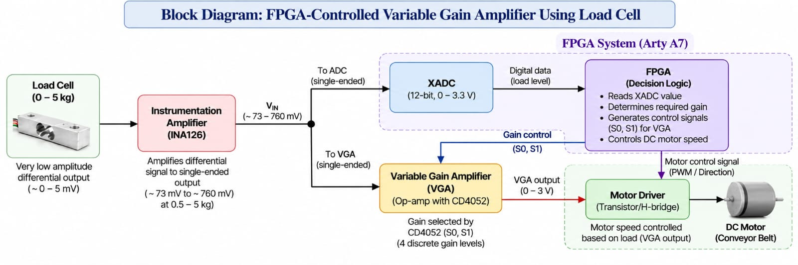

Theme 1 › Programmable Analog Gain Systems › System Architecture
SYSTEM ARCHITECTURE · FOUNDATION INTEGRATION
Where the signal and the code meet
System architecture
Document the blocks, their interfaces and the control path. Sprint 1 — Gate 2 Preparation
The chain in one line
Load cell → INA126 pre-amplifier (×175 nominal) → VIN splits. One branch goes to the XADC, which is what the FPGA measures; the other goes through the NE5532 variable gain stage (×2 to ×11) and its 0–3 V output drives the motor driver. The FPGA sets the CD4052 select lines S1 S0 so the gain tracks the measured weight.
One analog path with two branches, one digital path, one point where they meet: the multiplexer select inputs. The XADC measures; the VGA drives.
Signal path

VIN splits after the pre-amplifier: one branch reaches the XADC directly and is what the FPGA measures; the other passes through the variable gain stage, whose 0–3 V output drives the motor driver. The actuator is the application this chain serves, not part of the artefact's build. The drawing labels the conversion 0–3.3 V and the board an Arty A7; the built system is a Nexys A7 whose JXADC pins A13/A14 are 0–1 V unipolar, and VIN tops out at 760 mV, so it fits either way. The gain decision itself is three comparators inside the FPGA at 819, 1434 and 1884 — the live circuit on the overview page shows the ADC and that block inside the board. Open the drawing full size to read the block detail.
Blocks, interfaces and governing FR
| # | Block | Signal in | Signal out | Governing FR |
|---|---|---|---|---|
| 1 | Load cell (5 kg, 4-wire strain gauge) | Load 0–5 kg | Differential 0.1–4.7 mV (measured) | FR1 |
| 2 | Pre-amplifier — INA126 instrumentation amplifier | Differential 0.1–4.7 mV | 48.7–760 mV (measured) | FR1 |
| 3 | Acquisition — Nexys A7 XADC (12-bit, 0–1 V) | VIN 48.7–760 mV (measured) | Digital code | FR1, FR7 |
| 4 | Variable gain stage — NE5532 non-inverting with switched RF network | VIN 48.7–760 mV | 0–3 V drive into the motor driver | FR1, FR2, FR3 |
| 5 | Gain-selection switch — CD4052 analog multiplexer | S1 S0 (3.3 V CMOS) plus four RF legs | Selected feedback resistor | FR2, FR6 |
| 6 | Gain-control logic — Artix-7 FPGA | XADC reading | S1 S0 (3.3 V CMOS) | FR2, FR6 |
| 7 | Motor driver + DC motor (application, not built) | 0–3 V analog drive plus direction/enable | Shaft motion — conveyor belt | FR1 |
Digital control path
| # | Block | Function |
|---|---|---|
| 1 | Gain-decision logic (FPGA) | Three comparators on the 12-bit word — 819, 1434 and 1884, i.e. 200, 350 and 460 mV — latch the gain code once per conversion (threshold/windowing, not truncation) |
| 2 | Code register (holds S1 S0 between conversions) | Keeps the code stable for the conversion window; a break-before-make dwell and hysteresis band are not in the current Verilog |
| 3 | S1 S0 output pins (3.3 V CMOS) | Drives the CD4052 select inputs |
| 4 | CD4052 select inputs | Physically re-routes the feedback resistor — the point where digital meets analog |
Where analog meets digital: the CD4052 select inputs (WS1 · A.3). The component that makes it possible: an analog multiplexer.
Subsystem alternatives
| Subsystem | Alternatives | Selected | Reason |
|---|---|---|---|
| Pre-amplifier | Instrumentation amplifier IC / three-op-amp discrete stage / single op-amp difference amplifier | INA126 instrumentation amplifier | High input impedance and high CMRR for a 1 kΩ bridge; low noise for millivolt signals |
| Variable gain stage | Switched feedback resistors via analog mux / digital potentiometer / dedicated PGA IC | Op-amp with CD4052-switched feedback resistors | Four switched gains map the 48.7–760 mV VIN span onto the driver’s input window — enough drive at light load to clear the deadband, without saturating at 5 kg. Details on page 3. |
| Amplifier configuration | Inverting / non-inverting / differential / instrumentation | Non-inverting (Av = 1 + RF/Rin) | Input impedance stays high, so the 1 kΩ bridge is not loaded; one resistor ratio sets the gain, which makes each setting switchable with a single mux; no sign inversion, so weight maps monotonically to output voltage. |
| Acquisition | On-chip XADC / external SPI ADC with MCU | Nexys A7 XADC (12-bit, 0–1 V) | Already on the assigned board and reads VIN directly; 48.7–760 mV fits the 0–1 V range without a divider |
| Controller | Artix-7 FPGA / microcontroller | Artix-7 FPGA | Artefact requirement — the gain code is generated in hardware from the XADC reading |
Interfaces to settle before build
- Control logic level: the FPGA drives 3.3 V, but a CD4052 running from 5 V needs 0.7 × VDD = 3.5 V for a guaranteed logic high. Confirm the actual VDD and, if it is 5 V, either level-shift S1 S0 or run the multiplexer from 3.3 V (the signal only reaches 760 mV, so 3.3 V is enough).
- Actuator interface: the VGA output sets the analog drive level, while the drawing shows the FPGA also driving the motor driver. Confirm which driver input (enable, direction or PWM) the FPGA owns, and that the driver accepts a 0–3 V analog level.
- Common ground between the FPGA board and the analog board: single-point connection (WS6 · B).
- Test points: TP1 load-cell output, TP2 INA126 output and XADC input, TP3 VGA output at the motor driver input, TP4 analog ground, TP5 supply rails (WS2 · D.2).
The block-diagram sketch (WS1 · A.4) and the as-built redraw (WS9 · A.1) are kept with the project files; the chain above is the as-built version without the change annotations.